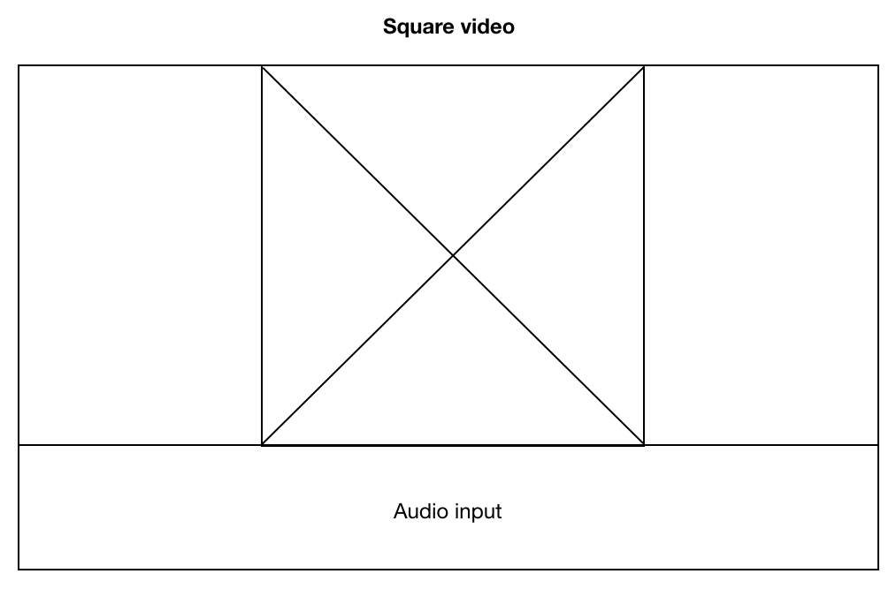
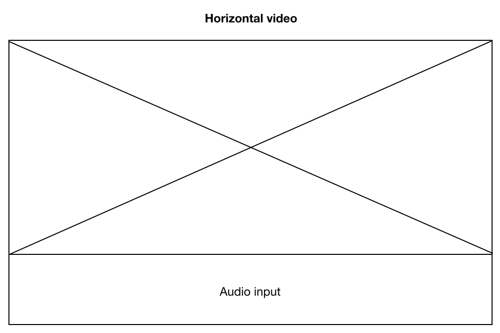
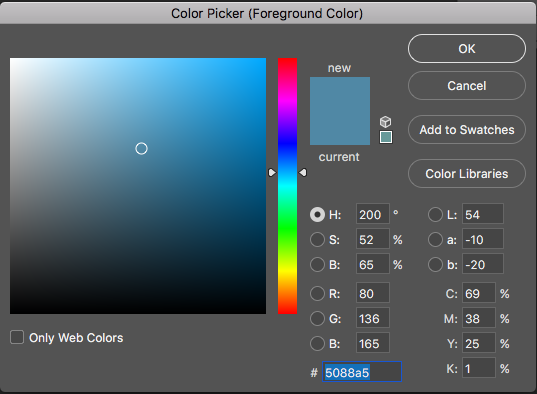
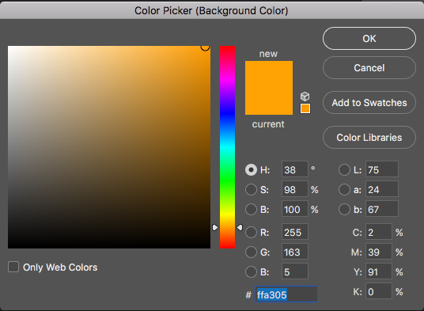
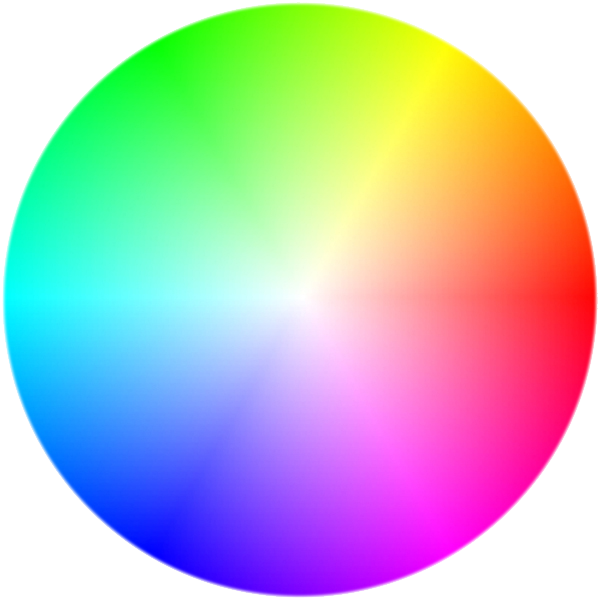
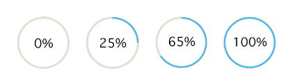

Design Documentation - ipvive UI 1.0
I was doing a practice on UI for ipvive and this is the documentation. ipvive is an embedded human insights cloud services to help people capture the always illusive emotional chemistry that connects them to and deepens relationships with the world around them. It is called Human Chemistry Intelligence.
My Role: This was a hands-on independent practice, so I wore all the hats.

The Challenge
This time I was assigned to make a user-specific CMS at the scale of a web screen.
Requirements:
• Input: video, voice, location, hrm
• Output: who, what, when, where, feeling, why, what for and who else
This is a vague specification. With limited information provided, I had to come up pretty much everything. On the other hand, this gives me the design freedom.
My thought about this CMS is that all information should be visible in one interface. No need to jump around between pages. Simplicity is the top priority.

Stephen Anderson's UX Hierarchy of Needs
Flowchart
Real-time input. Real-time output.
Scenario
The potential use for this app is to give suggestions to users based on their current body chemistry level. I came up an idea with a dating situation. Dating would alter chemistry level in our body, so a dating scenario would be a perfect fit for the use of the app.
Chemistry Level in Relationship
Wireframe
Input Information Architecture
• I considered the hamburger button. information should be displayed vertically at either left or right side of the screen.
• Information should be visible to users. There was an article I read that showed users are most likely will not discover info/optins if they are placed under an button that need an extra click. The best way to inform users is to display info directly, so I made the info consistently visible instead of hidden under the hamburger button. Therefore, I ditched the hamburger button.
• The information section takes 1/6 horizontal width because this is the ideal space for display info across a wide screen.
• Serial Position effect told us that the propensity of a user to best remember the first and last items in a series. By adapting this concept, I reserved top-left and bottom-left for important components.
Initial Layout
• There are 4 different sections: information, input, emotional status, and function.
• I was pondering about where the ipvive logo should be placed. There were 4 candidates: top-left, bottom-left, top-right, bottom-right. According to an article from Nielsen Norman Group, "Users are 89% more likely to remember logos shown in the traditional top-left position than logos placed on the right." So I decided to place the ipvive logo at top left corner as the brand identity.
• Input should be the most significant part. In this case, I placed audio track under the video screen, indicating audio goes along with the video (referring to traditional video editing software interface).
Video editing software. Audio tracks are beneath video.
- Video Input
This is important. Consider the majority of modern monitor screens are horizontal, videos should be displayed horizontally to fit the screen resolution. But a lot of people hold their phones vertically to record the video. This will cause what's called the "Vertical Video Syndrome" --- it means there will be empty parts on both side of screen.
Vertical Video Syndrome. Plenty of empty space on both sides.

Square video is better, but there still will be empty parts on both sides.

Horizontal video is the most appropriate case, and this is the correct way to record video with a mobile device.
With the rest of space, I placed status section under the video/audio section. This was to manifest that status section was related to video/audio input.
The final structure. Left side is static and displays info to users. Right side is dynamic and displays real-time video, audio, and status.
Other Details
- Color
• I decided to use standard sRGB color since they are compatible with modern web browsers.
• It is a single-page app and interface should be clean and easy to navigate, so there should be no more than 3 colors.
• I have looked up the ipvive website and used Photoshop to extract colors from the two quotes --- "Divergent from common thinking" and "Human Chemistry Intelligence."


These two colors form a good contrast ratio balance (they are at the opposite sides of the color spectrum).
- Font
• It is possible to use more font family, but no more than 3. Too many font family variations would cause inconsistency and messy feeling to users.
• Since the content is only one single page, I used only “Apple symbol” throughout the whole interface for the sake of consistency.
• For sections that displaying more information, use smaller font size. For example: the “where” section has 3 lines: place name, street, and city state zipcode, so this section should use smaller font size to fit all the info.
Font size depends on content load
- Icons
• Icons should convey its meaning without text explanation. They are visual languages.
• There are icons available online ready for use. I referenced Apple's Human Interface Guidelines to help me make decisions.
From top to bottom: time (when), location (where), people (who), activity info (what), motivation (what for), emotion (feeling).
- Function Control
• This is the most controversial part I couldn’t decide for a while: should user need a “pause” button?
• I referred this function to Youtube live video. When users are away or need a short break, instead of closing the tab, they will pause the video and get back on it later.
• And then I thought about one situation: what if users want to get an analysis at a particular facial expression or a particular moment? If there is no pause button, video, audio, and emotional status will always be dynamic and constantly changing. Users will lose control over this app. That would be big bummer to the overall experience.
• So I decided to enable the pause function. I placed a function button on the bottom right --- the place designated for it. Like any regular play/pause button, it enables users to pause and resume the process.
• According to Von Restorff effect, this button is a call to action button and standing out on the interface. I enlarged the size of the button to make it more distinguishable from the rest of rounded icons.
Play and pause button for a better control
- Status Bar
• Choosing the status bar was pretty straight forward --- every icon in this page is rounded, so for the sake of consistency, status bar is also rounded.
• For consistency and contrast, the color of the fill animation is the same ocean blue. Hex #5088a5.
• Bar's fill accords with percentage.

Satus Bar Animation
First Visual Mockup
The very first mockup
Prev Next